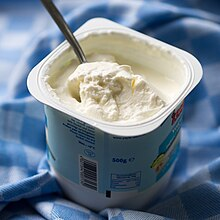

-
Leafy Greens: Spinach, kale, and broccoli are rich in iron and magnesium, helping replenish lost nutrients.
-

Fruits: Bananas, oranges, and watermelons provide natural sugars, hydration, and reduce bloating.
-
Whole Grains: Oats, brown rice, and quinoa are packed with fiber, aiding digestion and reducing bloating.
-
Nuts and Seeds: Almonds, walnuts, and flaxseeds are rich in omega-3 fatty acids, reducing inflammation and cramps.
-

Dark Chocolate: Contains magnesium and antioxidants, helping to improve mood and reduce cramps.
-

Yougurt:Rich in probiotics, it helps maintain gut health and reduces bloating during your period.